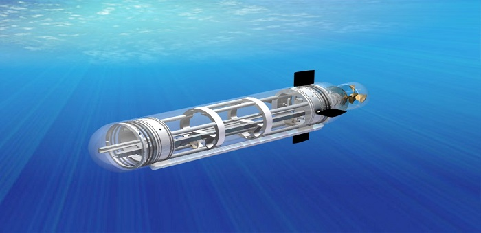
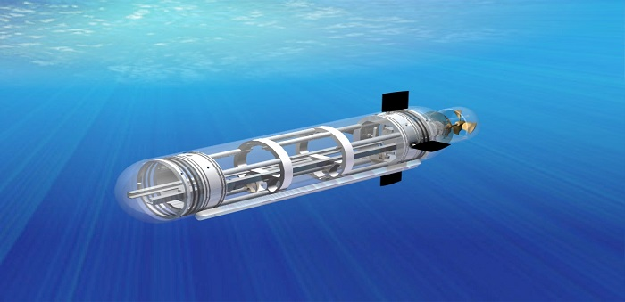
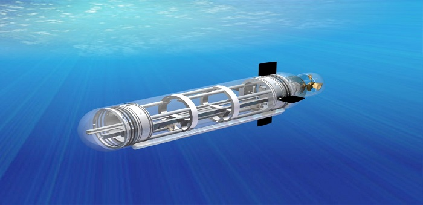

Scroll down to see the sticky effect.

PVAMU RoboSub is an entirely student focused endeavor based on innovation, excellence and professionalism. Students and faculty work cohesively to gain a unique applied experience with high-tech instrumentation. The collaboration creates interesting ideas and produces next generation concepts. It is this ideology that has made PVAMU RoboSub the most comprehensive and technologically advanced program of its kind. The support of our partners is essential to the success of students and the program.
| Launch of website | 19/10/2017 |
|---|---|
| Team won third position at the SAVe competition held by NIOT | 14/12/2016 |
| Design of the bot is ready | 13/04/2017 |
| Sponsored by Intel | 17/10/2017 |
| New members added | 17/03/2017 |